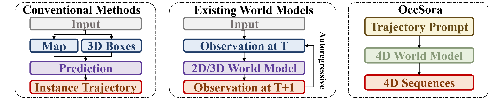
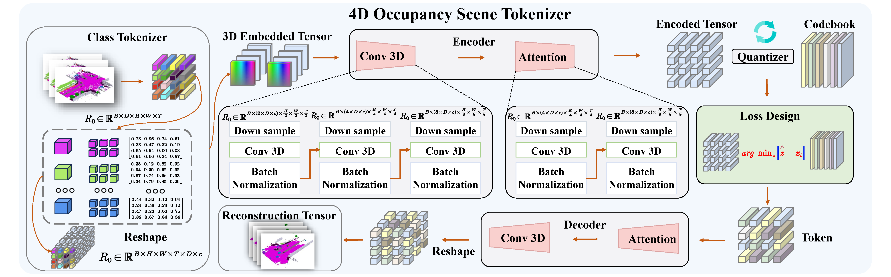
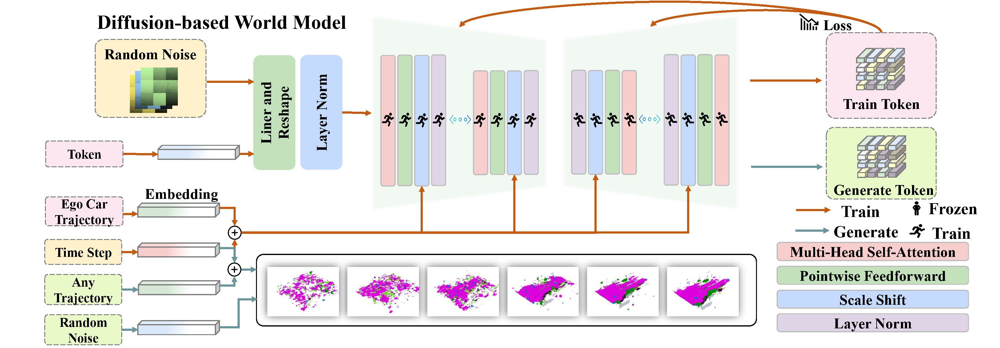
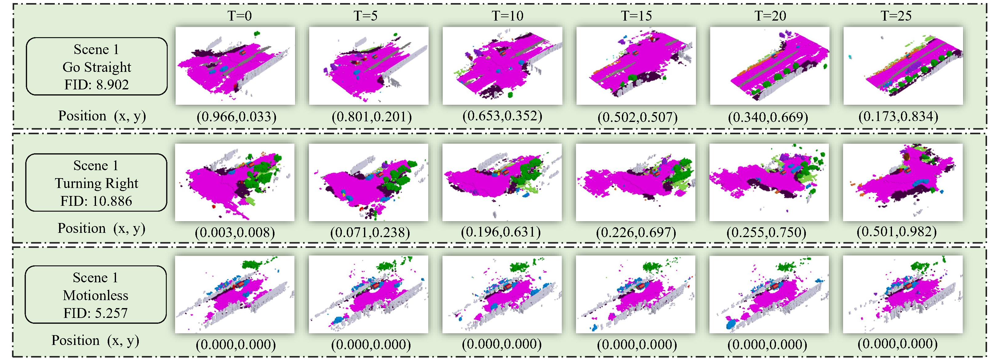
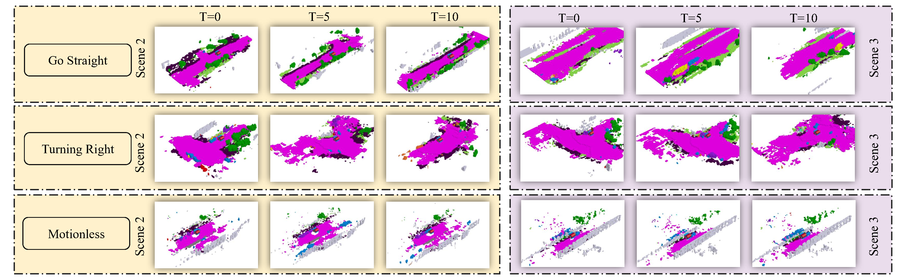

Overview of our contributions. Different from most existing world models which adopt an autoregressive framework to perform next-token prediction, we propose a diffusion-based 4D occupancy generation model, OccSora, to model long-term temporal evolutions more efficiently. We employ a 4D scene tokenizer to obtain compact discrete spatial-temporal representations for 4D occupancy input and achieve high-quality reconstruction for long-sequence occupancy videos. We then learn a diffusion transformer on the spatial-temporal representations and generate 4D occupancy conditioned on a trajectory prompt. OccSora can generate 16s-videos with authentic 3D layout and temporal consistency, demonstrating its ability to understand the spatial and temporal distributions of driving scenes.

Comparisons with existing methods. With trajectory-aware 4D generation, OccSora has the potential to serve as a world simulator for the decision-making of autonomous driving.
4D Occupancy Scene Tokenizer

The architecture of the 4D occupancy scene tokenizer. The proposed method encodes and compresses 4D scenes to extract high-dimensional features, which are then decoded to retrieve the spatiotemporal physical characteristics of the scenes.
Diffusion-based World Model

Illustration of the diffusion-based world model. The model involves utilizing the optimal codebook obtained from training the 4D occupancy scene tokenizer to convert 4D occupancy into a sequence of tokens. These tokens, along with the ego vehicle trajectory and random noise, are then combined as input for denoising training to acquire the generated token.Results
OccSora can generate autonomous driving 4D occupancy scenes that adhere to physical logic and achieve controllable scene generation based on different trajectories.
4D Occupancy Generation
Visualization of reconstruction of the 4D occupancy scene tokenizer. We directly compress a long video sequence to obtain a spatial-temporal scene representation.

Trajectory Video Generation
4D occupancy generation under different input trajectories. From top to bottom, there is go straight, turning right, and motionless, with each scene generation corresponding to the trajectory, ensuring logical coherence and continuity.

Scene Video Generation
Generating diverse continuous scenes under trajectory control. The generated scenes exhibit diversity while maintaining the stability of the original trajectory control.

Bibtex
@article{wang2024occsora,
title={OccSora: 4D Occupancy Generation Models as World Simulators for Autonomous Driving},
author={Wang, Lening and Zheng, Wenzhao and Ren, Yilong and Jiang, Han and Cui, Zhiyong and Yu, Haiyang and Lu, Jiwen},
journal={arXiv preprint arXiv:2405.},
year={2024}
}